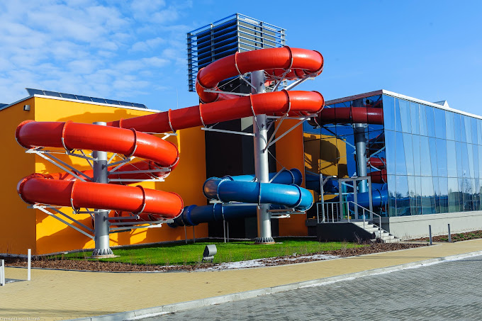
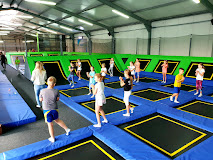

why visit?
Location: Park Wodny Siedlce, Jana Pawła II 8, 08-110 Siedlce, Poland
during hot summer weather, and even in colder days, its always a blast to visit a water park. Siedlce water park can offer just that! from jacuzzi to water slides, this water park has it all! 
Location: Park Trampolin Jumpout Siedlce: Atrakcje, Urodziny, Wycieczki Szkolne, Łukowska 16, 08-110 Siedlce, Poland
Too much energy? Visit trampoline jumpout Siedlce, with a massive venue with hundreds of trampolines, there is more then enough space for you, friends AND family!